Right Stuff Tough
A fictional look ahead to the Debate of '28 — a portrait of Mark Kelly under pressure, where preparation, facts, discipline, and service matter more than volume. One man reaches for the fight. The other reaches for the job.
The Nevado Raider Call
The flotilla invitation. Bring your own boat, raise your voice, and find the world the Nevado Raiders way — diving, exploring, anchor parties, and every decision made together.

Welcome to the Reef
The opening song of the Blue Rim 5™ expedition — the first invitation aboard Shamrocket as she leaves Pensacola behind.

4-Tides
The theme for the 4-Tides Cantina — the onboard bar for every mile of the expedition, where the anchor goes down, the drinks go up, and the day gets properly closed out.
Only Arizona
The official theme song of the Blue Rim 5™ expedition. Written in the White Mountains of Arizona on a Sunday morning. Copyrighted. Arizona-born. Bound for the sea.
Boarding Pass
The ticket for the whole voyage — Blue Rim 5™, departing West Florida November 1, 2026. Destination: a life without boundaries.
Sunset Serenade
An instrumental interlude — son jarocho coastal celebration style, guitar and upright bass, drifting to a quiet, unforced close as the day's weight releases.
Pink Sand and Rum
An island-hopping night out through the Bahamas — Nassau to Bimini, the Exumas to Harbour Island — chasing the best nightspots the chain has to offer.
Bahamas Celebration
One island, one people, one rhythm — Junkanoo, Rake-and-Scrape, Goombay, and Quadrille woven into a single anthem for Bahamian culture.
A Turey Song
Feet hanging off a dock at night, a Bahamian schoolteacher naming the stars — Turéy, the old Lucayan word for sky.
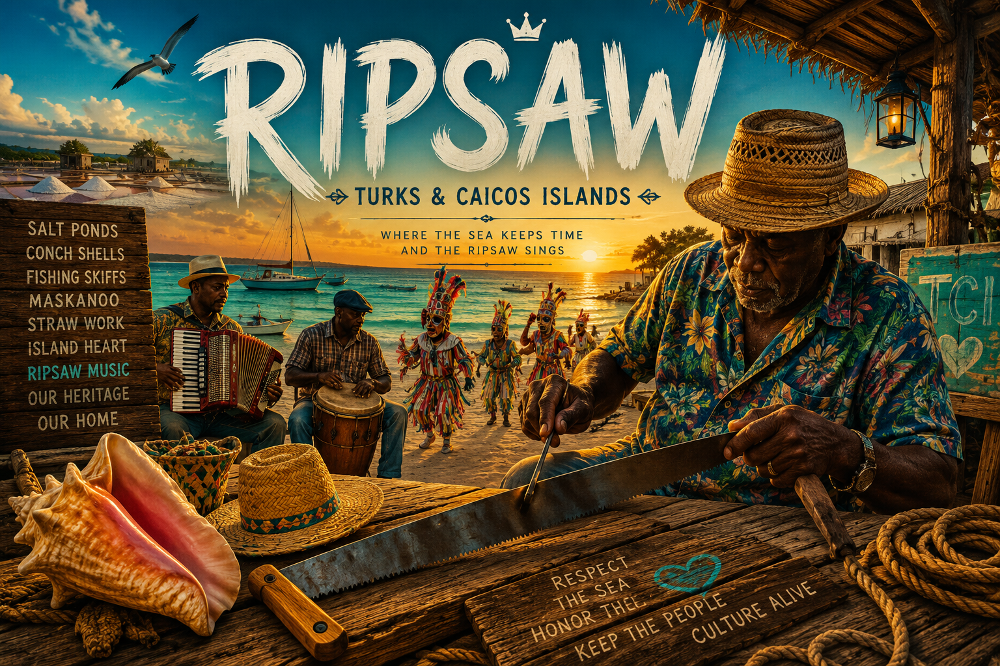
Ripsaw
Named for the islands' own rake-and-scrape sound — North Caicos to Salt Cay, Grand Turk to Provo, trade winds setting the pace for a sailor learning what the tide already knows.
Welcome to the Dominican Republic
Written after a year living on the island in Santo Domingo — an experience that will never be forgotten. This is the welcome song for the country that gave him that year.

Pegaíto
A merengue built entirely around the tease — the sound of a barrio finding out exactly how close the dancing really got.
Dame Una Fría
A colmado-side anthem for the cold Presidente in hand and the crowd that gathers around it — flag flying, drums going, the island calling for one more round.
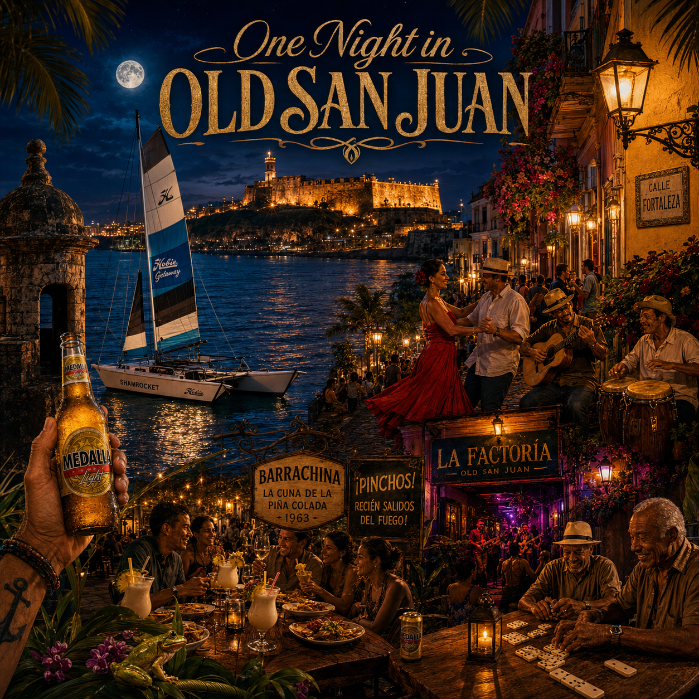
One Night in Old San Juan
A quick stop for dinner turns into a night that refuses to end — pinchos, piña coladas at Barrachina, dancing on Calle Fortaleza, and La Factoría pulling him deeper until dawn and the coquí talk him right back onto the dock.
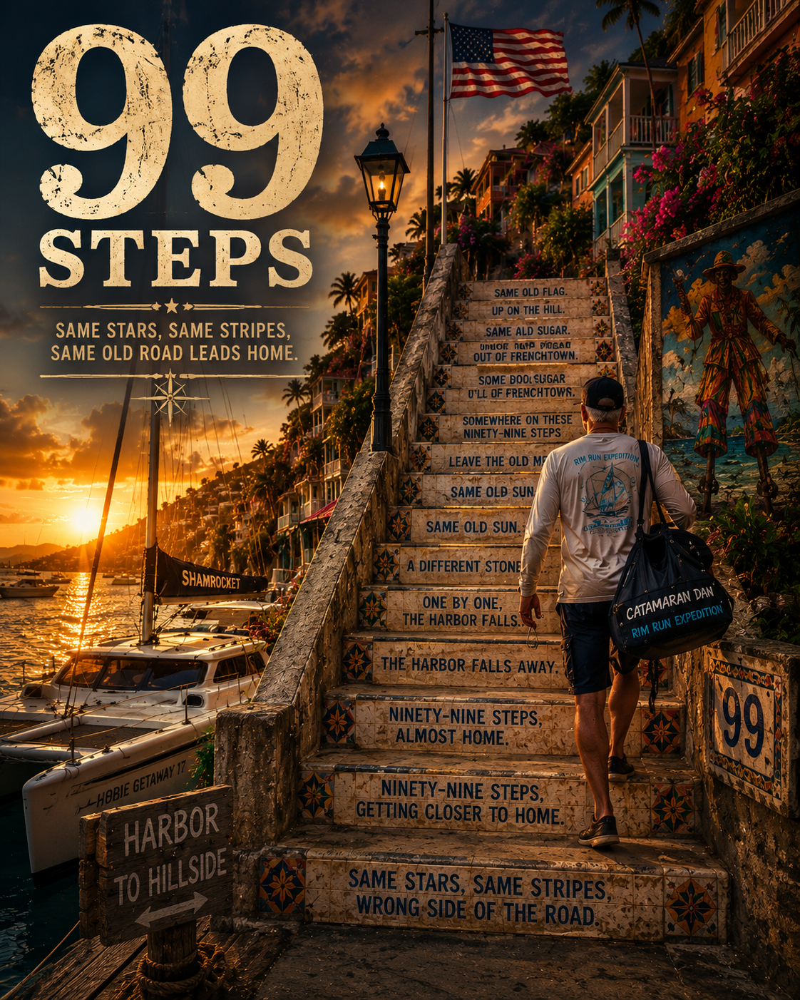
Ninety-Nine Steps
Same flag, different water — the climb up Charlotte Amalie's famous stone staircase, where American soil and island rhythm meet. Built around traditional Virgin Islands quelbe scratch-band instrumentation, including banjo, a real thread in Crucian musical tradition rather than an incidental choice.
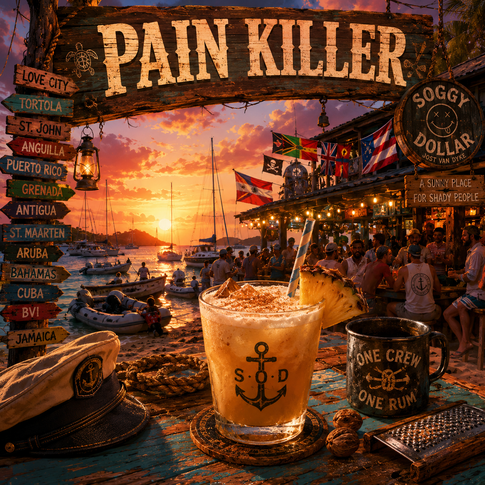
Pain Killer
Solo voice and acoustic guitar for the Soggy Dollar Bar, Jost Van Dyke — where every mariner in the harbor swims ashore to trade stories, raise a cup, and become one crew.
Burn
Burn — the sound of Las Diables coming down the street, chains and all.

I'm Here! — ¡Ya llegúé!
The BEC terminus — Isla Mujeres, Quintana Roo. Months of open water end in a single line, shouted at last from the deck.
Better Beachy Than Bitchy®
Sun. Salt. Good vibes. Leave the drama ashore. The official Better Beachy Than Bitchy® anthem — good people, cold drinks, live music, high tides, zero drama.
Beach Belly Beat
1982. Beach in front of the Sheraton Tel Aviv. Royal Marines, guys from the 5th Special Forces, two Norwegian UNIFIL soldiers, and my Spec Ops team — different flags, different wars, same fire. And Haya, an IDF soldier with incredible hazel eyes, dancing like she owns the sand.
I'll Have a Shimmy Shake
The rhythm has taken hold. Beach rock gets hotter, the darbuka digs deeper, the hips get looser, and watching from the sidelines is becoming increasingly difficult. Playful, sexy and built to move, I'll Have a Shimmy Shake turns the beach party into a dance floor.
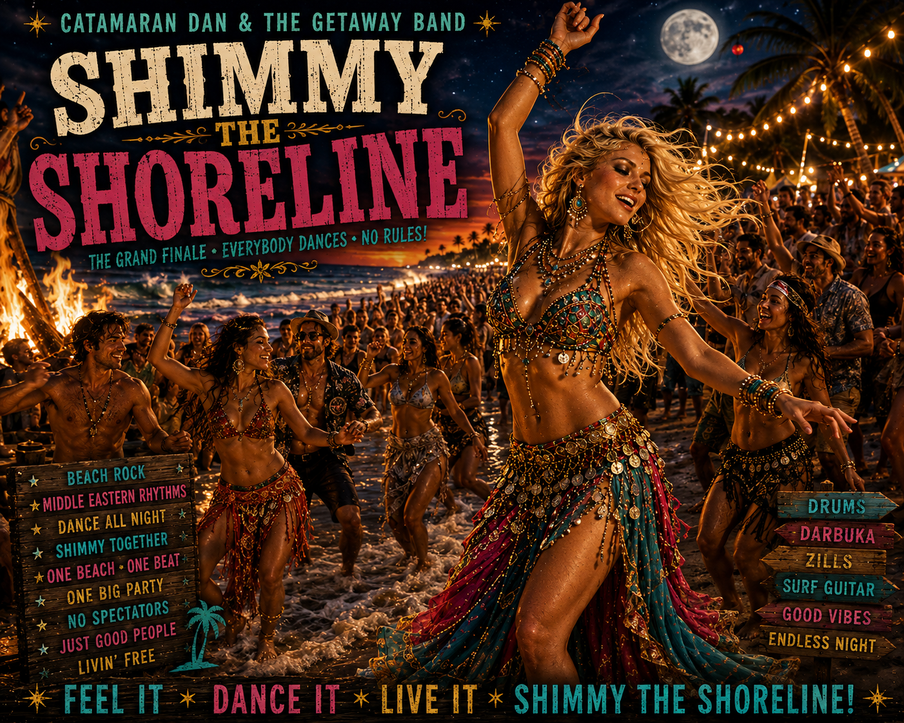
Shimmy the Shoreline
The grand finale. No spectators. No sidelines. Surf guitar, pounding darbuka, zills, handclaps and a shoreline full of people become one enormous rhythm. What started as a beach beat has become something bigger — strangers dancing together, inhibitions disappearing, and the whole damn shoreline moving as one. You didn't come here like this. Neither did they.
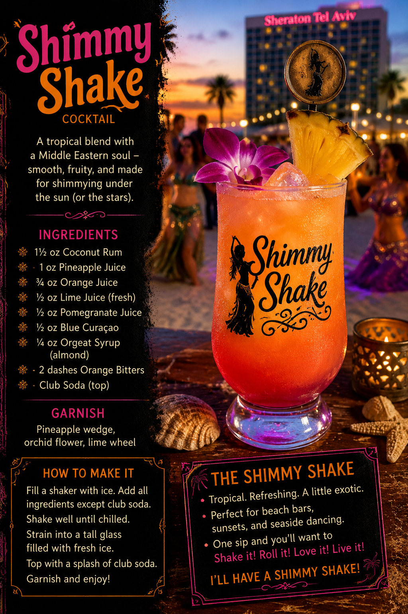
The Shimmy Shake
A tropical blend with a Middle Eastern soul — smooth, fruity, and made for shimmying under the sun (or the stars).
On the Menu ← Back to Songs of the Rim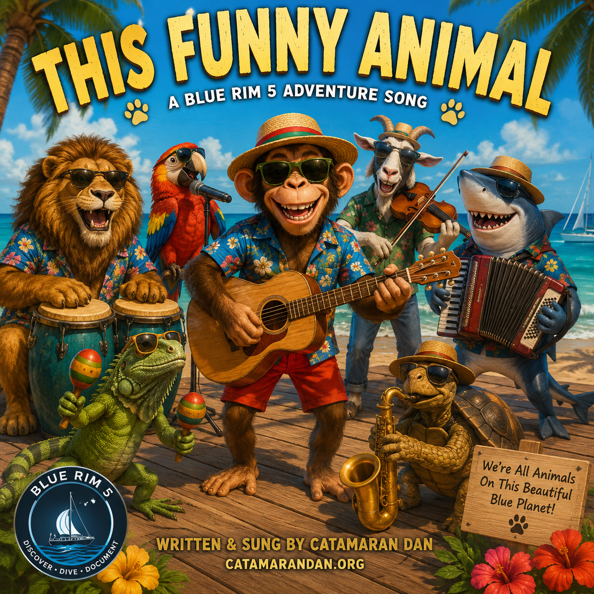
Funny Animal Club
A reminder that every human being is part of the animal kingdom — and that recognizing that shared footing is the starting point for treating each other with real equality.
Naughty, Naughty Norseman
Written for Norway's 2026 World Cup run: black rum, dice on the barrel, a Norseman who answers to no chain, and a Rio night that turned a football story into a love story.
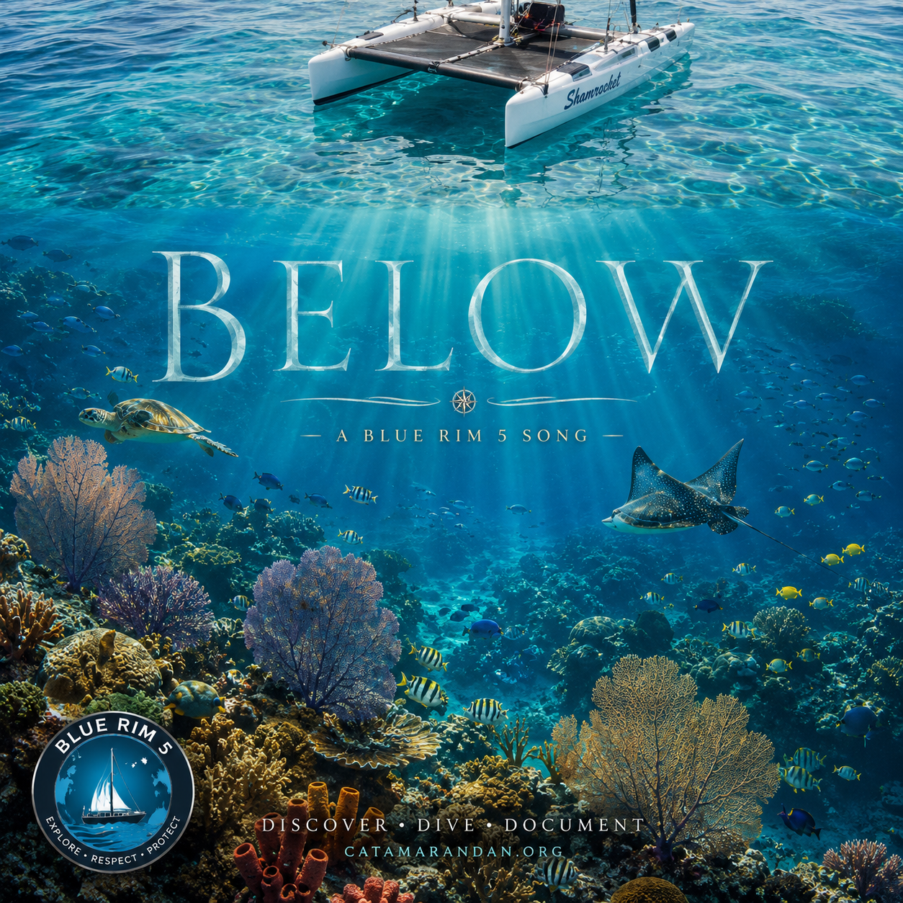
Below
You can't imagine life underwater until you go there yourself — and once you do, it changes you. Below is about that transformation, the moment the surface disappears and a different world opens up.
Please — Come Back to the Water
Hawaiian folk. 68 BPM. Baritone ukulele. Written somewhere between the desert and the deep blue — for Israel Kamakawiwoʻole, whose voice still fills the ocean.
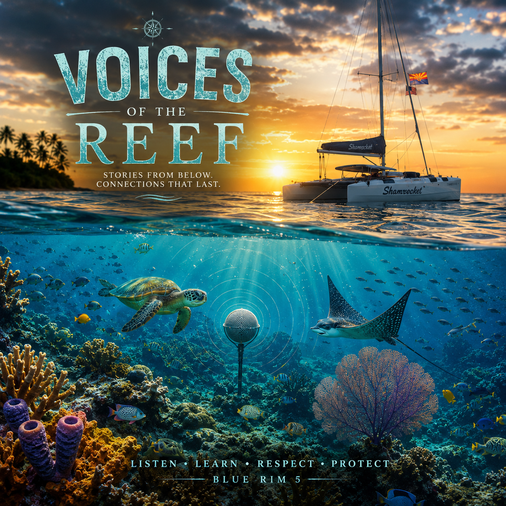
Voices of the Reef
The reef comes alive around a snorkeler as the animals themselves start to speak — turning a quiet swim into a conversation with everything living beneath the surface.
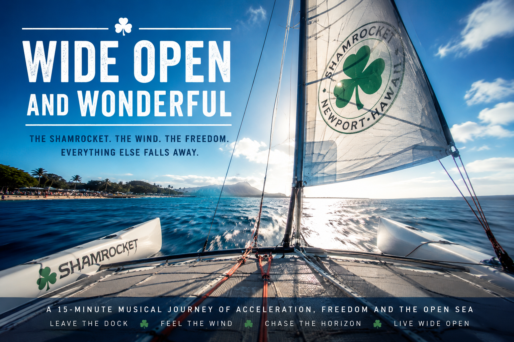
Wide Open and Wonderful
A rock song that follows Shamrocket from the moment she leaves the dock to the first seconds of sailing wide open — and just how wonderful that feeling is.
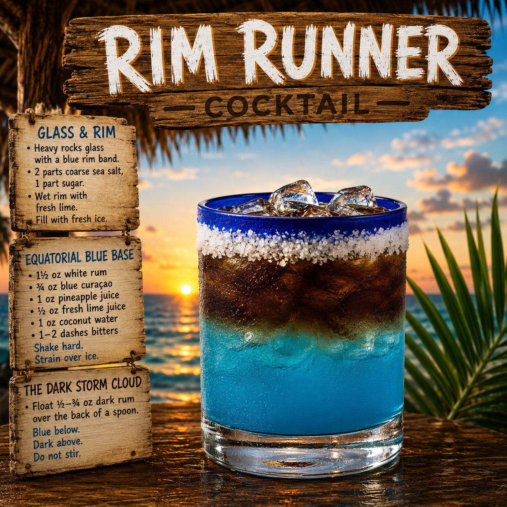
Rim Runner™ Anthem
The Rim Runner™ anthem — stadium island-rock, sunset-protocol energy, made for the moment the anchor goes down.